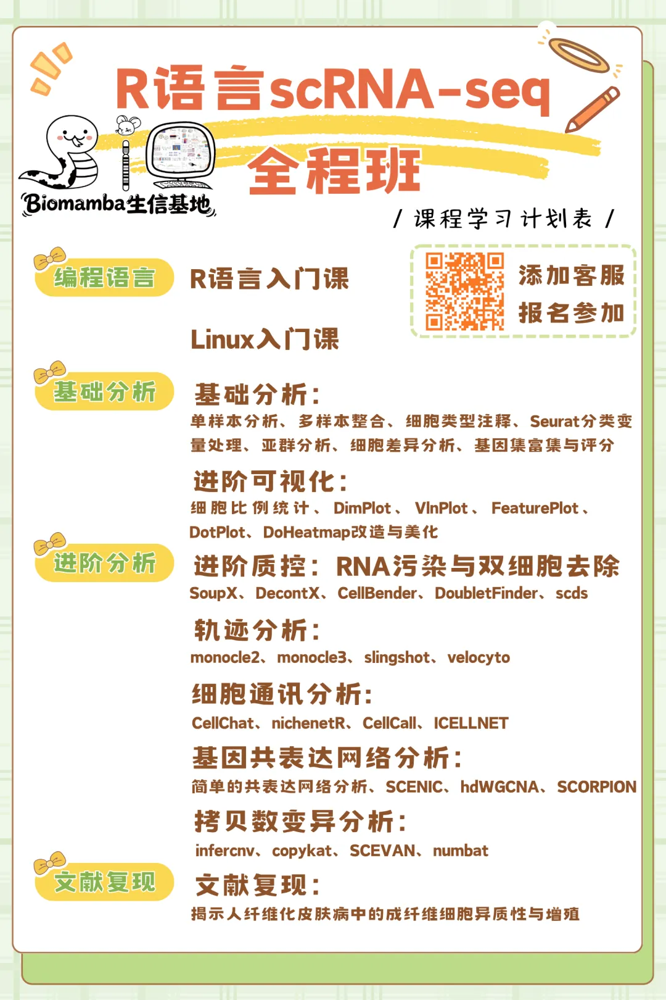
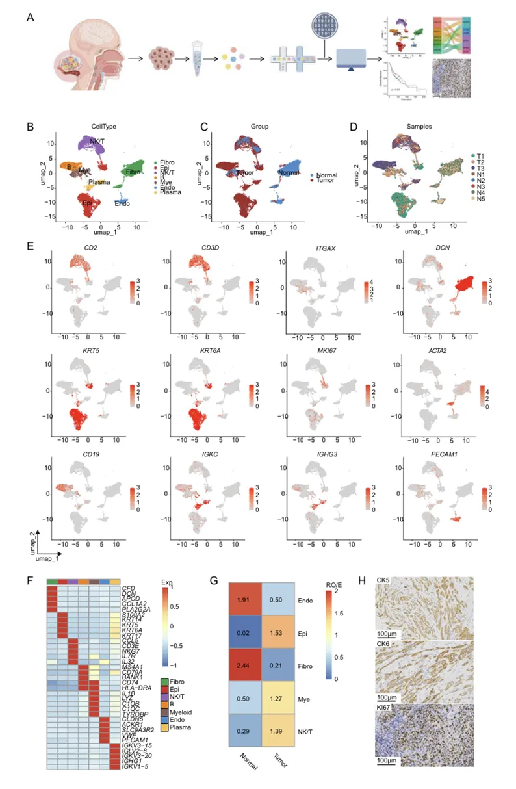
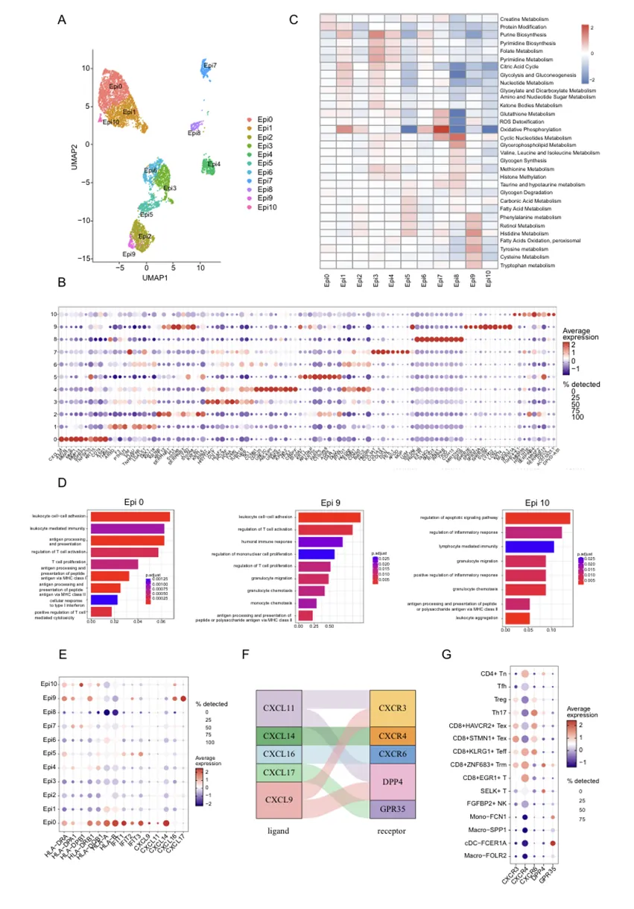
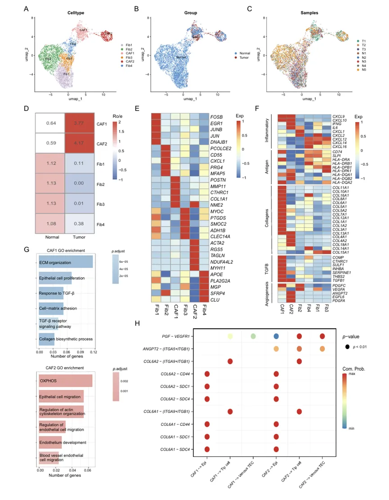
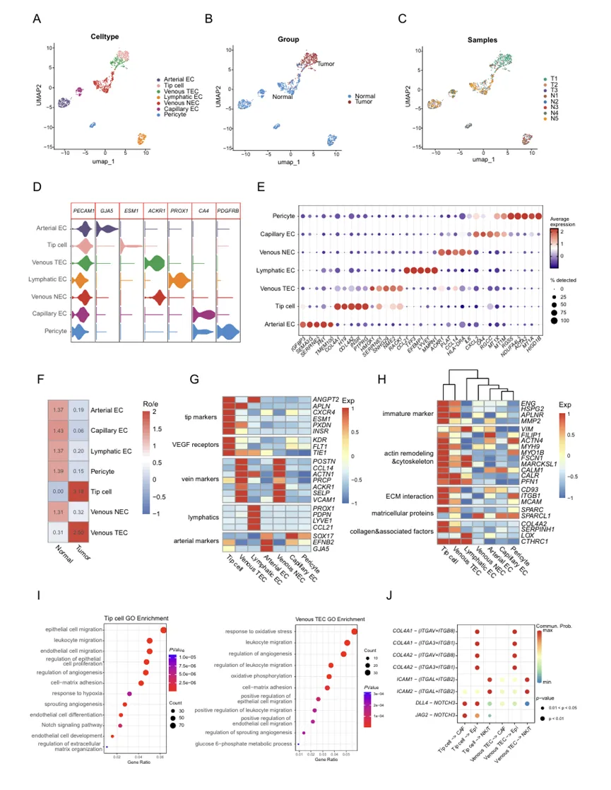
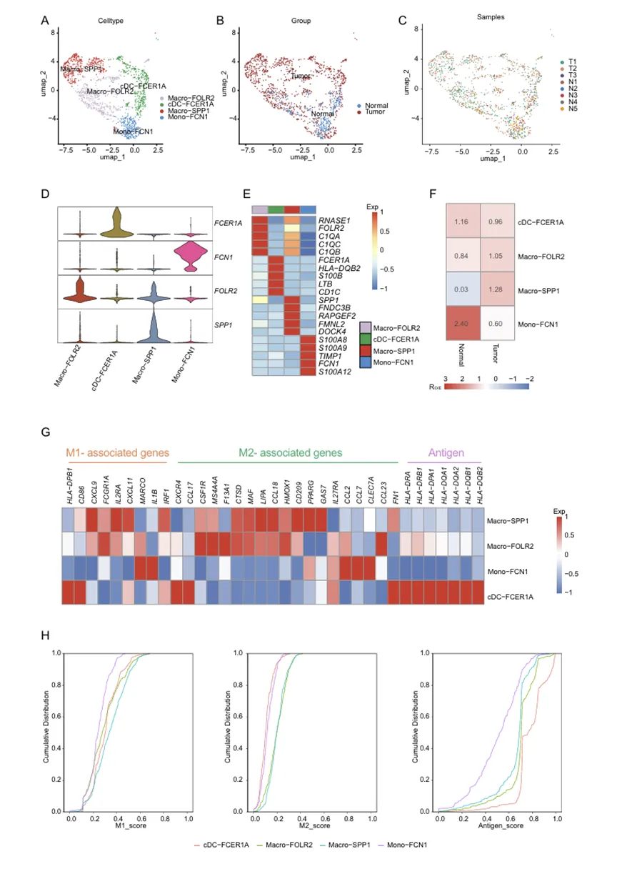
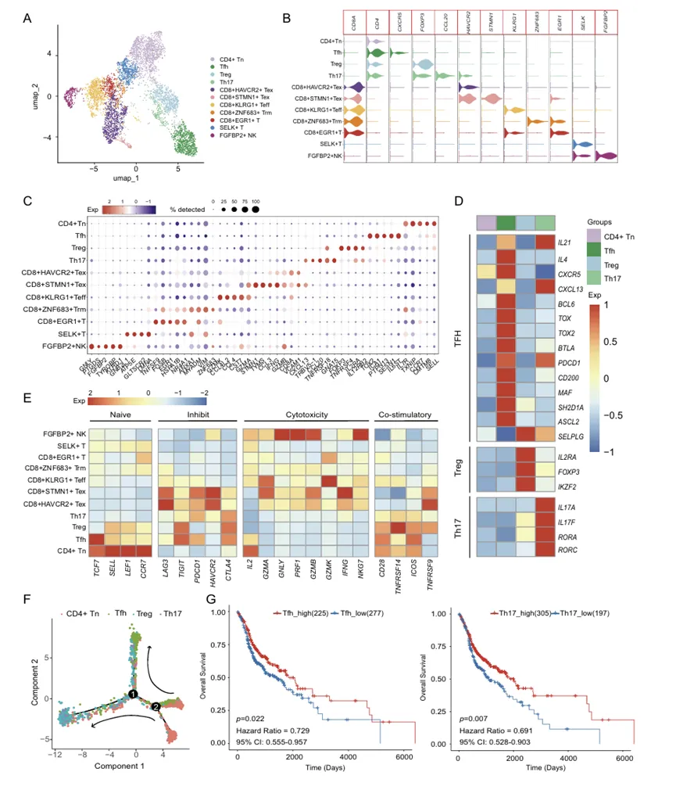

基于scRNA解析HNSCC肿瘤免疫微环境中Tfh、Th17细胞浸润的预后价值
原文：https://mp.weixin.qq.com/s?__biz=MzAwMzIzOTk5OQ==&mid=2247539062&idx=3&sn=0196583680ef73d6f66b1ee380387573&chksm=9b3c2026ac4ba930590da719e4804a7dddbbc193e00113ce542f72b5535c5c7377c2d4d76e88#rd 合集：文献速递
一、写在前面
本次分享的是发布于《Cancer Immunol Immunother》（IF=5.1）的文章，感兴趣的同学可以看看原文："Highlighting immune features of the tumor ecosystem and prognostic value of Tfh and Th17 cell infiltration in head and neck squamous cell carcinoma by single-cell RNA-seq"
头颈鳞状细胞癌（HNSCC）是一种具有高度异质性的恶性肿瘤，其复杂的肿瘤免疫微环境是影响患者预后和治疗反应的关键因素。尽管免疫检查点抑制剂等疗法已应用于临床，但大多数HNSCC患者响应有限，其根本原因在于我们对肿瘤生态系统内不同细胞组分（包括恶性细胞、基质细胞与免疫细胞）的相互作用网络理解尚不全面。近年来，单细胞RNA测序技术为在单细胞分辨率下解析这一复杂性提供了可能。已有研究提示，肿瘤内的上皮细胞本身可能具备免疫调节功能，而特定的CD4+ T细胞亚群，如滤泡辅助T细胞和Th17细胞，与预后相关。然而，这些细胞在HNSCC中的具体特征、它们如何通过信号通路相互通信，以及哪些细胞是关键的预后决定因子，这些重要问题仍未得到系统性的解答。因此，本研究旨在利用scRNA-seq技术，全面揭示HNSCC肿瘤生态系统的免疫特征，并鉴定具有预后价值的关键细胞亚群。
了解更多R语言单细胞课程：

如果需要单细胞数据分析教学、生信热点全文复现、自测数据个性化分析辅导、实验科研服务和常态化实验学习，欢迎联系客服微信[Biomamba_zhushou]。
二、主要内容
通过对3例HNSCC肿瘤和5例正常组织进行 scRNA-seq分析，我们获得了26,496个单细胞的转录组数据，系统揭示了HNSCC的细胞组成和相互作用
1：scRNA-seq系统性解析HNSCC生态系统细胞组成

鉴定了生态系统中的七大核心细胞群体，并发现上皮细胞和免疫细胞在肿瘤组织中特异性富集。
2：上皮细胞亚群通过趋化因子轴驱动免疫细胞浸润

进一步将上皮细胞分为11个亚群，其中Epi0、Epi9和Epi10三个亚群高表达CXCL9、CXCL16等趋化因子，并通过与免疫细胞上的CXCR3、CXCR6等受体配对，主动招募T细胞和髓系细胞浸润。
3：肿瘤相关成纤维细胞（CAFs）展现促瘤与促血管生成表型

显示肿瘤相关成纤维细胞（CAFs）形成CAF1和CAF2两个促瘤亚群，分别通过TGF-β信号和PGF-VEGFR1轴促进肿瘤进展和血管生成。
4：肿瘤内皮细胞（TECs）呈现促瘤与促免疫的双重功能

发现肿瘤内皮细胞（TECs）同样具有双重作用：既通过NOTCH信号支持肿瘤生长，又通过ICAM1/2介导T细胞跨血管迁移。
5：髓系细胞表型超越传统M1/M2二分法

表明肿瘤相关巨噬细胞同时表达M1和M2型基因，突破了传统的极化分型。
6：Tfh与Th17细胞是HNSCC患者的关键预后保护因子

将研究导向临床，确认Tfh和Th17细胞的浸润水平与患者更好的总生存期显著相关，确立了其作为独立预后保护因子的价值。
三、总结与展望
总结
本研究利用scRNA-seq技术，系统刻画了HNSCC肿瘤生态系统的单细胞图谱，核心发现包括：鉴定了三个具有免疫调节功能的上皮细胞亚群；阐释了CAFs和TECs通过特定信号通路发挥促瘤及免疫调节作用的机制；明确了Tfh和Th17细胞是关键的预后相关免疫亚群。
创新与意义
首先，我们揭示了上皮细胞主动参与免疫微环境塑造的新功能，丰富了对于非免疫细胞作用的认知。其次，鉴定出的Tfh和Th17细胞为HNSCC的预后判断提供了新的生物标志物。
局限与未来方向
我们的scRNA-seq初始样本量较小，结论需要在更大规模的队列中验证。此外，基于转录组数据推断的细胞间相互作用，需要后续通过体外共培养、体内动物模型等功能性实验进行严格的因果验证。

如何联系我们

 留一个领取资料、免费两周学习版服务器的微信号[Biomamba_zhushou]，方便各位随时交流。同时我们也构建了交流群矩阵，欢迎大家入群讨论。
大家可以阅读完这几篇之后添加给生信入门初学者的小贴士如何搜索公众号过往发布内容
留一个领取资料、免费两周学习版服务器的微信号[Biomamba_zhushou]，方便各位随时交流。同时我们也构建了交流群矩阵，欢迎大家入群讨论。
大家可以阅读完这几篇之后添加给生信入门初学者的小贴士如何搜索公众号过往发布内容
已有生信基地联系方式的同学无需重复添加

 您点的每个赞和在看，我都认真当成了喜欢
您点的每个赞和在看，我都认真当成了喜欢